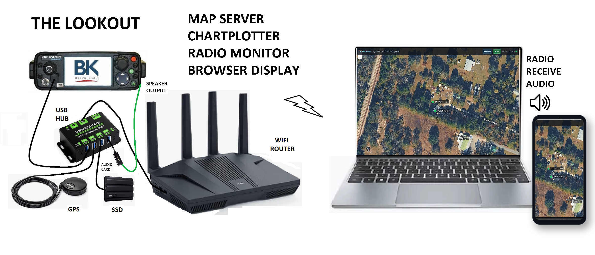
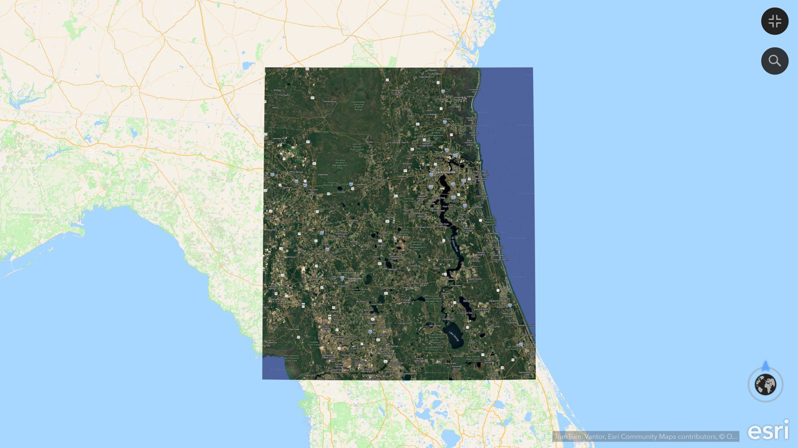
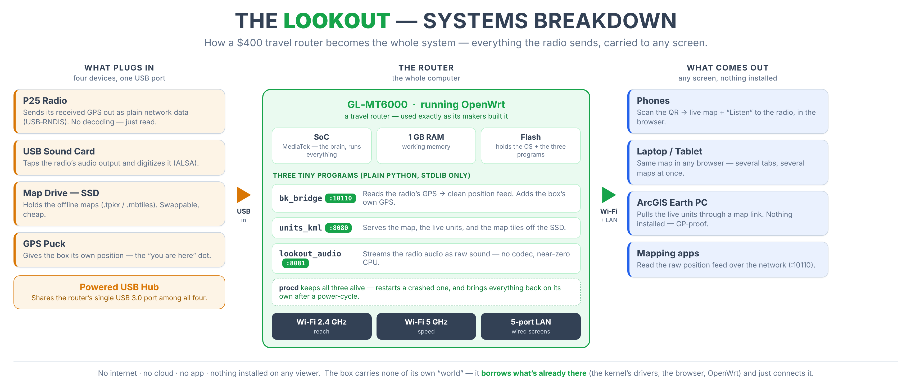
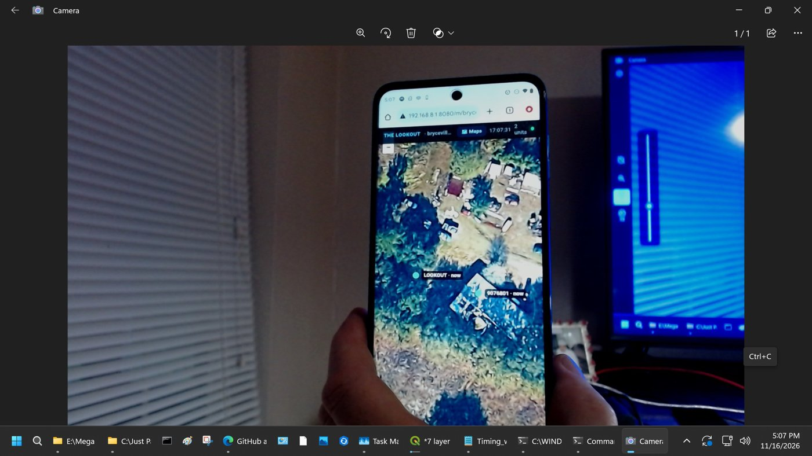
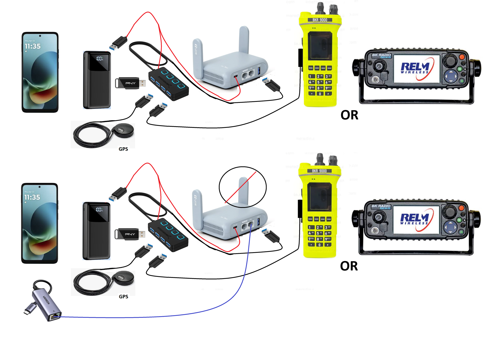
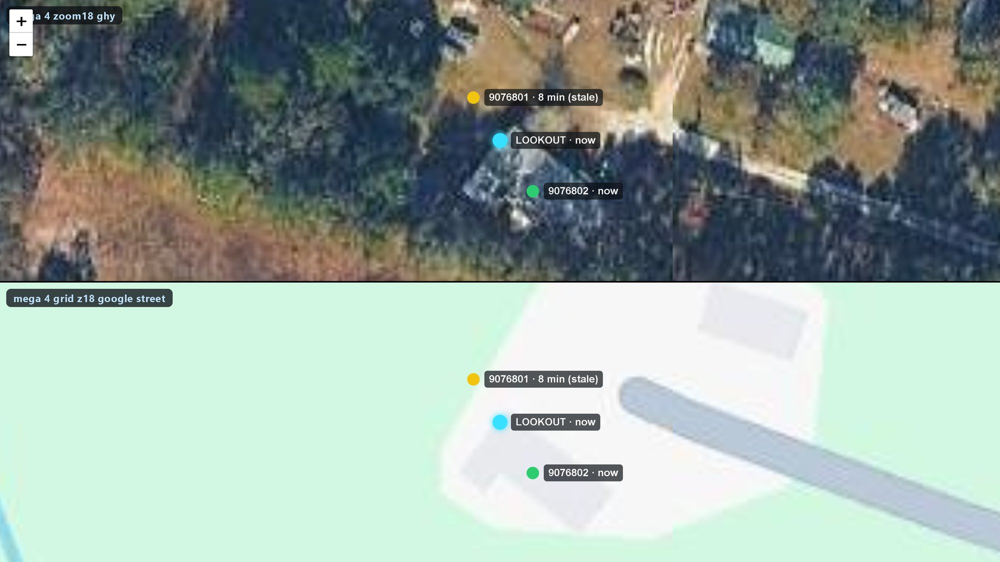
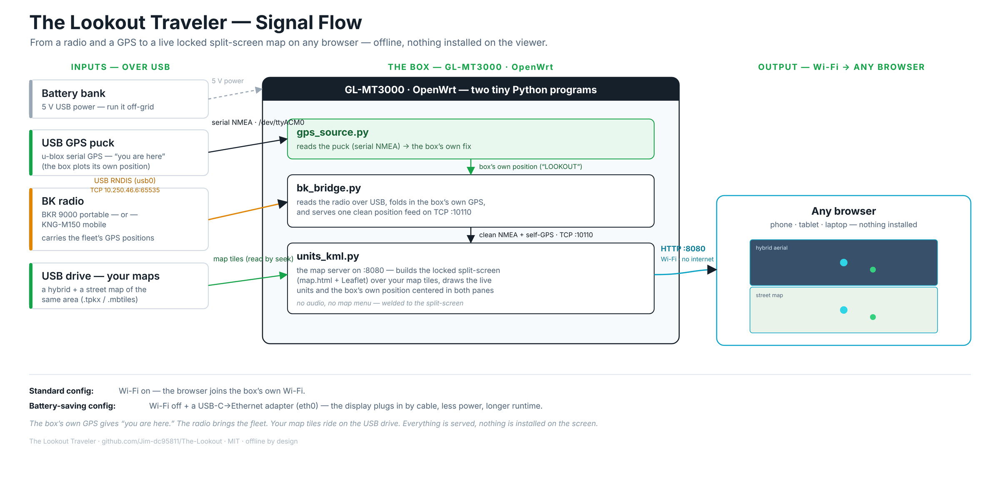

A $170 travel router turns your own maps — and your radio — into a live, zoomable map any phone or PC can open. Nothing installed on the viewer. No internet.
Hand the box a giant map file — tens of gigabytes, zoom-20 detail — and it serves it straight to a browser. No conversion. No tile server. No GIS.
It reads the map tiles by seeking right into the file and paints them with full pan and zoom, offline, on a phone. A 50 GB map pans smooth off a box that fits in your hand. That one thing, all by itself, is the point — the live radio units and the audio are built around it.

Drop your map files on an SSD. Every phone and PC opens them with full zoom — offline, no app. Many maps, one tap to switch.
Plug in a P25 radio and your field units move on the map in real time — the same feed on every screen at once.
Add a USB sound card and the map grows a Listen button — the crew hears the net while watching the units move, still nothing installed.
Plug a GPS into the box and it plots its own position alongside the fleet — the command post on the map, automatically.
Four things plug in over USB; three tiny programs run inside a stock travel router; a live map comes out to every screen. The box carries none of its own “world” — it uses the kernel's drivers, the browser, and OpenWrt, and just connects them.

Built on OpenWrt and a GL-MT6000 — used exactly as their makers intended. Every driver and tool from the vendor's own signed package feed, no firmware rebuild, no custom kernel, plain Python. Nothing hacked.
Plug the radio, a GPS, and an SSD of maps into a GL-MT6000 through a powered USB hub. Then point the setup app at it — it installs everything over the network and starts it. Power-cycle safe: plug it in and forget it.

The Windows app. Point it at a brand-new router, click once, and it sets the whole thing up over SSH — proven from a bare factory reset.
Download v2.4Makes the print-ready QR card you tape to the box or the truck. Point a phone at it, tap, the live map opens — no typing.
Download v1.1Everything — the programs, the boot services, the setup guide, the engineering record. Open, MIT, employer-free.
View on GitHubThe Lookout serves maps — it doesn't make them. Build your own offline map packages (TPKX) from satellite imagery, pictures, anything, with a separate set of free Windows tools.
Everything above rides in a truck or sits on mains power. The Traveler is the Lookout you carry — the same live fleet map and “you are here,” on a pocket GL-MT3000 running off a battery bank, for one person on foot at one incident.



A pocket router and a battery bank. One person, on foot, one incident — the fleet map goes where the crew goes.
Hybrid imagery on top, street map on the bottom, your position centered in both — read terrain and streets at a glance, no controls to touch.
A completely separate app — Traveler Manager — shares nothing with Lookout Manager. Point it at a bare GL-MT3000, click once, and it installs everything over SSH. Proven end to end: the split-screen, the box's own position, and a live portable-radio unit on the map — offline, nothing on the viewer.